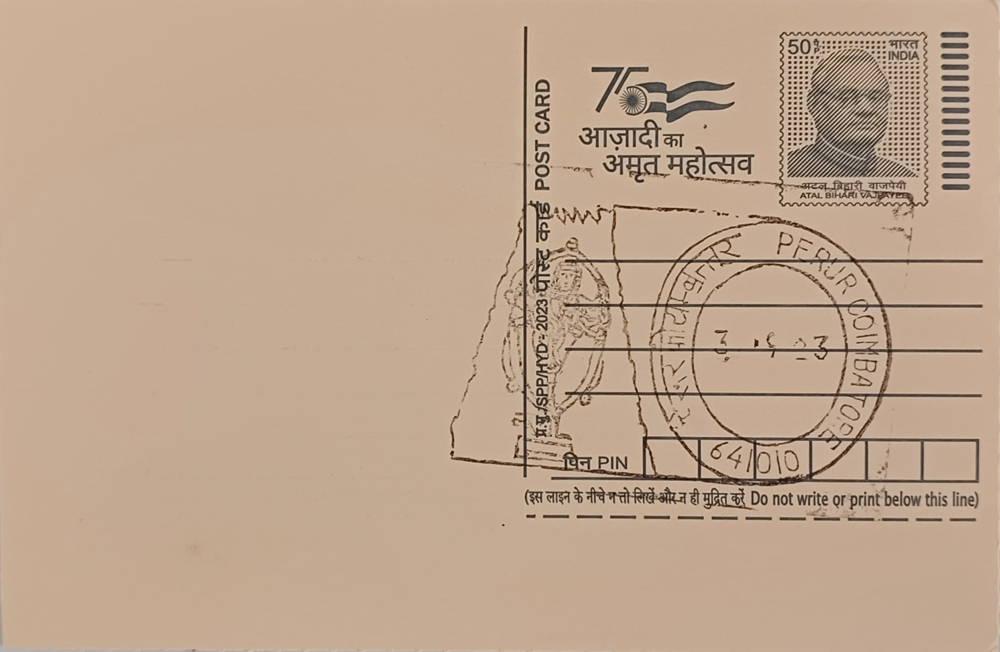

Patteeswarar Temple
பட்டீஸ்வரர் கோயில்


The temple derives its principal name from a local legend in which Kamadhenu, the divine cow, performed penance before a hidden Shivalinga, her milk dripping upon it continuously, until her calf, Patti, struck an anthill covering the lingam with its hooves and exposed it. Lord Shiva is said to have then declared he would reside there as Patteeswarar, taking his name from the calf, while the settlement itself came to be called Kamadhenupuram and Pattipuri. The site is also known as Ilanji Sundareswarar Temple, a name tied to a sacred ilanji (bullet-wood) tree within the precincts, reflecting the common South Indian practice of naming a shrine after its sthala vriksha, or temple tree, alongside the presiding deity.
Patteeswarar Temple ranks among the Padal Petra Sthalams, the 275 Shaiva shrines glorified in the verses of the Nayanmar saints, having been praised in the Thevaram hymns of Sundaramurthy Nainar. Situated on the bank of the Noyyal river at Perur on the western outskirts of Coimbatore, it functions as a living center of Tamil Shaiva worship and has drawn the devotion of poets such as Arunagirinathar and Kachiappa Munivar, the latter composing the Sthala Purana associated with the site. Administered today under the Hindu Religious and Charitable Endowments Department of the Tamil Nadu government, the temple holds standing both as an active place of daily ritual and as a recognized heritage monument representative of the Kongu Nadu region's temple culture.
Tradition credits the Chola ruler Karikala with establishing worship at the site in antiquity, though the temple's present form owes much to later patronage, including contributions attributed to Raja Raja Chola and subsequent reinforcement under the Hoysalas and the Vijayanagar kings, whose builders expanded the mandapams and gopurams during the medieval period. The complex follows Dravidian temple architecture, built largely of granite with successive prakarams, and the main sanctum enshrines a Swayambu Lingam, a self-manifested form of Shiva, worshipped alongside the goddess Pachai Nayaki. The temple's mandapams, particularly the thousand-pillared hall added during the Vijayanagar-Nayak period, feature pillars carved with depictions of Shiva's various forms, while several ceiling sections display an unusual continuous motif of stone-carved chain links centered on lotus medallions, worked directly from single slabs of granite.
A defining feature of the temple is the Kanaka Sabha, a gold-plated shrine housing a Nataraja image, marking Perur as one of the handful of sites in Tamil Nadu where Shiva's cosmic dance form receives such dedicated enshrinement outside the five principal Sabha temples. Equally distinctive are the elaborately carved wooden pillars and ceilings in several of the temple's mandapams, worked with mythological narrative scenes, floral scrollwork, and figures in high relief, representing a style of timber craftsmanship less commonly encountered in the predominantly stone-built temples of the Kaveri and Noyyal basin region. These wood carvings, maintained through periodic conservation by temple artisans, are frequently cited by art historians as among the finest surviving examples of traditional South Indian temple woodwork still in active religious use.
The temple today continues an annual festival calendar that includes the Panguni Uthiram Brahmotsavam in March-April, featuring a temple car procession through the surrounding streets, together with the Aani sapling-planting observance in June-July and the Margazhi Tiruvadhirai festival in December-January, each drawing worshippers from across the Coimbatore region. Day-to-day affairs, including upkeep of the sanctum, mandapams, and surrounding tank, are overseen by the HR&CE department through a dedicated temple administration with its own public information office. Set within a working agrarian locality on the Noyyal's banks, Patteeswarar Temple functions less as a static monument than as the ritual and social anchor of Perur village, its festival calendar and daily worship schedule still drawing the surrounding community into its upkeep and ceremonies.
| Date of Introduction | February 3, 1976 |
|---|---|
| Address | Sub Postmaster, |
| Perur, Coimbatore SO, | |
| Coimbatore (dt.), Tamil Nadu - 641010. |